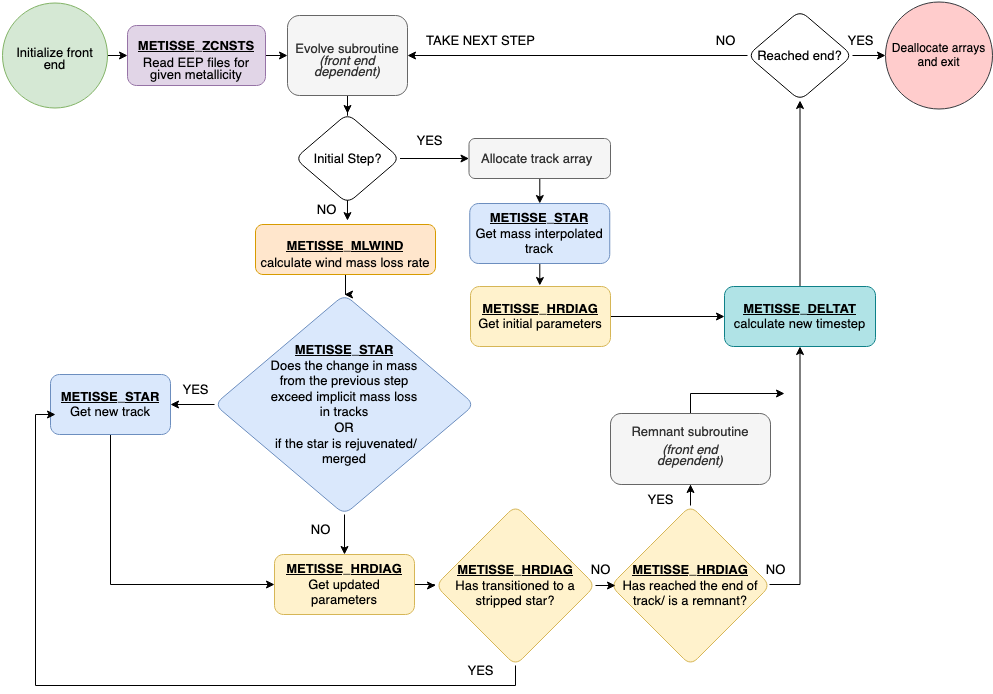

Code structure
METISSE is designed as an modern alternative to Fortran 77 based SSE (Hurley et al. 2000) for use in population synthesis codes. Its source code, located in the src directory, can be broadly divided into two categories: subroutines analogous to SSE and Fortran modules that provide supporting functions and utilities for METISSE’s data structures and operations.
1. SSE-like subroutines
File Name |
Description |
|---|---|
METISSE_zcnsts.f90 |
Controls metallicity (Z) specific functions. |
METISSE_star.f90 |
Find relevant tracks from the input set and interpolate in mass to |
METISSE_hrdiag.f90 |
Interpolate within the new track to determine stellar parameters at a given age. |
METISSE_deltat.f90 |
Calculate the time steps depending on the stage of evolution. |
METISSE_mlwind.f90 |
Derive the mass loss through stellar winds. |
METISSE_gntage.f90 |
Determine the age of a giant star after merger |
2. Fortran Modules
File Name |
Description |
|---|---|
track_support.f90 |
Contains general data structures and functions needed throughout the program. |
interp_support.f90 |
Contains functions required for interpolation. |
remnant_support.f90 |
Contains functions needed to calculate properties of remnant phases. |
z_support.f90 |
Together with METISSE_zcnsts, it reads all input namelists and files, |
sse_support.f90 |
Contains subroutines to calculate SSE-specific quantities. |
In addition to the above modules, there is an additional file called METISSE_miscellaneous.f90 which contains miscellaneous subroutines that can be called by the binary codes. Although these routines could be organized within a module, they are kept separate to ensure compatibility with legacy Fortran 77 codes, which does not support modules. It contains:
File Name |
Description |
|---|---|
alloc_track |
Allocate the track object. |
dealloc_track |
Deallocate the track object and arrays within. |
initialize_front_end |
Inform METISSE what code is using it. |
set_star_type |
Set star type to |
3. Additional files
The SSE-like subroutines and Fortran modules form the core of METISSE and are indispensable for its operation. However, they cannot function by themselves. They must be called through a wrapper or main program, the exact form of which depends on how METISSE is being used. For example, the following files form the wrapper of METISSE in the standalone mode.
File Name |
Description |
|---|---|
main_metisse.f90 |
Main program for running METISSE. Can only evolve single stars. |
evolv_metisse.f90 |
Controls the evolution of each star and writes output to files. |
assign_commons_main.f90 |
Assign values for variables used in METISSE from SSE_input_controls. |
4. Workflow
Here is a flowchart describing the workflow of METISSE:

Adding METISSE to your code
Although METISSE is written entirely in Modern Fortran, it interfaces smoothly with Fortran 77 functions and subroutines. This enables users to leverage modern language features while preserving compatibility with legacy codes.
To allow users to switch seamlessly between the two methods for stellar evolution, METISSE contains subroutines that replicate the behaviour of the SSE subroutines externally, with similar names and input/output variables. This design feature of METISSE allows direct integration of its interpolation-based stellar evolution routines into existing population synthesis codes without extensive refactoring.
If your code currently uses the Fortran 77–based subroutines from the SSE code, METISSE can be integrated through following steps:
1. Bridging functions for SSE-specific subroutines
Replace the SSE-specific subroutines — namely zcnsts.f, star.f, hrdiag.f, deltat.f, mlwind.f, and gntage.f — with bridging functions that redirect calls either to SSE or to METISSE, depending on the stellar engine selected by the user.
For example, the SSE subroutine hrdiag can be renamed to SSE_hrdiag, and a bridging subroutine hrdiag.f can then be defined as follows:
IF (sse_flag) THEN
CALL SSE_hrdiag(...)
ELSE
CALL METISSE_hrdiag(...)
END IF
The variable sse_flag (or an equivalent control variable) should be defined and set outside the bridging functions.
Key Steps
Locate the Fortran 77 subroutines from SSE that your code currently uses: zcnsts.f, star.f, hrdiag.f, deltat.f, mlwind.f, and gntage.f.
For each SSE routine, rename it to include a prefix (e.g., SSE_).
Write new subroutines with the original SSE names that act as bridges, redirecting calls to either SSE or METISSE based on a control variable (e.g., sse_flag).
2. Stellar remnant prescriptions
METISSE includes built-in prescriptions to assign and calculate stellar remnant properties at the end of a star’s life. However, if you want to continue using the stellar remnant prescriptions from your version of SSE, the relevant code from SSE’s hrdiag—responsible for assigning remnant types and calculating remnant properties—should be extracted into two separate subroutines, for example assign_remnant.f and hrdiag_remnant.f. This ensures that the same remnant prescriptions are applied consistently, regardless of whether SSE or METISSE is used as the stellar engine.
Key Steps
Identify remnant-related code in
SSE_hrdiag.fthat assigns remnant types and calculates remnant properties.Extract the remnant assignment code into a separate subroutine.
Extract remnant property calculations into another subroutine.
Update
SSE_hrdiag.fto call the two new subroutines in place of the original remnant-related code:CALL assign_remnant(...) CALL hrdiag_remnant(...)
If done correctly, SSE should produce no difference in output.
3. Setting Up the METISSE Front-End
METISSE requires knowledge of which external code is calling it so that it can execute code-specific instructions—for example, redirecting remnant calculations to the appropriate subroutines defined in that code.
This is achieved through a unique integer identifier called the front_end.
Each supported code is assigned a distinct front_end value, which is defined as an integer parameter in the track_support module.
To integrate a new code, you can add a corresponding front_end variable and assign it a unique integer value.
For example, the binary evolution code BSE (Hurley et al. 2002) uses the identifier:
integer, parameter:: BSE = 2
This allows METISSE to recognize when it is being called from BSE and apply the appropriate internal logic.
Key Steps
Define a
front_endfor your code intrack_supportmodule.Check all occurrences of the variable
front_endin METISSE.grep '-inR' 'front_end' $METISSE_DIR/srcAdd instructions specific to you code where necessary.
Variables specific to your code can be assigned in a file like
assign_commons_xyz.f90where ‘xyz’ is the name of your code.Make sure to set the front-end in your code before any calls to METISSE:
CALL initialize_front_end(front_end_name)
4. Updating the compilation instructions
Update your Makefile or compilation instructions to:
Include the METISSE source files.
Include the renamed SSE files (e.g., SSE_hrdiag.f).
Compile and link new remnant subroutines (assign_remnant.f, hrdiag_remnant.f).
Ensure linking order reflects module dependencies (e.g., track_support before METISSE_hrdiag).
5. Modify additional subroutines as needed
Calls to allocate and dellocate the track structure. Depending on the code, additional subroutines related to stellar and binary evolution (e.g., evolv*.f and comenv.f) may require minor modifications to work with METISSE.
In case of doubts, you can refer to how METISSE has been added to COSMIC and BSE. For details, please get in touch through GitHub discussions.